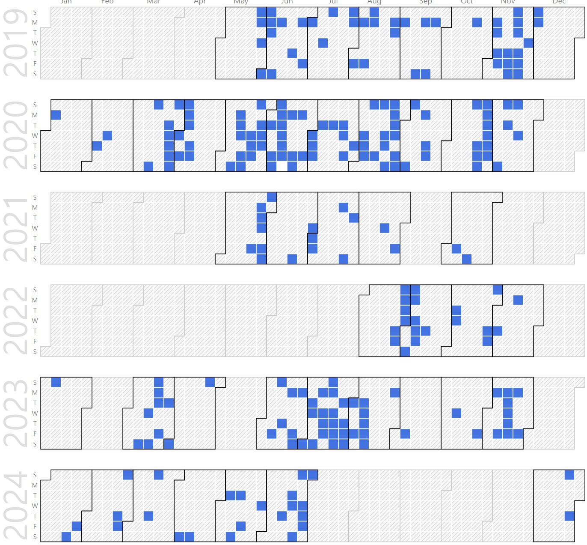

Sanghoon Lee (Ph.D. Research Professor in KNU)
Ph.D. Research Professor in KNU. |
Repository Commit History
|  |
Introduction
Full Bio Sketch
Mr. Lee received the B.S degree in Electronics Engineering at Dong-A University, Busan, Korea in 2009 and M.S degree in Electronics Engineering at Kyungpook National University, Daegu, Korea in 2011. His research interests include analog ICs, ASIC design and analysis. His current fields of interest is development and implementation of LiDAR sensor. Mr. Lee was a research engineer at GITC (Gyeongbuk of IT Convergence Industry Technology) from 2015 to 2018, and have worked on signal processing and circuit design for various sensors included LiDAR sensor. Since 2018, he is now a senior researcher in CARNAVICOM Co., Ltd., and working on circuit design of LiDAR sensor.
Research Topic
 Light detection and ranging sensors help autonomous vehicles detect the surrounding environment and the exact distance to an object's position. Conventional LiDAR sensors require a certain amount of a power because they detect objects by transmitting lasers at a regular interval according to a resolution. Constant power consumption from running multiple LiDAR sensors is detrimental to autonomous and electric vehicles using battery power. In this paper, we propose an algorithm that improves the inefficient power consumption during the constant operation of conventional LiDAR sensors. LiDAR sensors with the applied algorithm efficiently reduce power consumption in two ways: (a) controlling the resolution to vary the laser transmission period of a laser diode depending on the vehicle's speed and (b) reducing the static power consumption using the sleep mode, depending on the surrounding environment. The proposed LiDAR sensor with the resolution control algorithm reduces the power consumption of the laser diode by 6.92% to 32.43% depending on the vehicle's speed, compared to the maximum number of laser transmissions. The sleep mode with a surrounding environment-sensing algorithm reduces power consumption by 60.97%. The proposed LiDAR sensor has a risk factor for 4-cycles that does not detect an object in sleep mode, but we are considered to be negligible because it immediately switches to active mode when a change in surrounding conditions occurs. The proposed LiDAR sensor was tested on a commercial processor chip with the algorithm controlling the resolution according to the speed and surrounding environment of the vehicle. In addition, an integrated processor that reduces the power consumption using an adaptive power mode controller with on-chip code was designed using the Global Foundries 55-nm CMOS process.
Light detection and ranging sensors help autonomous vehicles detect the surrounding environment and the exact distance to an object's position. Conventional LiDAR sensors require a certain amount of a power because they detect objects by transmitting lasers at a regular interval according to a resolution. Constant power consumption from running multiple LiDAR sensors is detrimental to autonomous and electric vehicles using battery power. In this paper, we propose an algorithm that improves the inefficient power consumption during the constant operation of conventional LiDAR sensors. LiDAR sensors with the applied algorithm efficiently reduce power consumption in two ways: (a) controlling the resolution to vary the laser transmission period of a laser diode depending on the vehicle's speed and (b) reducing the static power consumption using the sleep mode, depending on the surrounding environment. The proposed LiDAR sensor with the resolution control algorithm reduces the power consumption of the laser diode by 6.92% to 32.43% depending on the vehicle's speed, compared to the maximum number of laser transmissions. The sleep mode with a surrounding environment-sensing algorithm reduces power consumption by 60.97%. The proposed LiDAR sensor has a risk factor for 4-cycles that does not detect an object in sleep mode, but we are considered to be negligible because it immediately switches to active mode when a change in surrounding conditions occurs. The proposed LiDAR sensor was tested on a commercial processor chip with the algorithm controlling the resolution according to the speed and surrounding environment of the vehicle. In addition, an integrated processor that reduces the power consumption using an adaptive power mode controller with on-chip code was designed using the Global Foundries 55-nm CMOS process.
Publications
Journal Publications (KCI 4, SCI 1)
J. Lee, S. Lee, J. Kim, J. Park, J. Shin, and P. Choi, Design of 8-bit Single Slope ADC for Signal Processing of Multiple Image Sensors (KCI) in Journal of Sensor Science and Technology (JSST), Vol. 24, No. 4, pages 252-257, 2015.
S. Lee, J. Kim, J. Shin, and P. Choi, Algorithm of Modified Single-slope A/D Converter with Improved Conversion Time for CMOS Image Sensor System (KCI) in Journal of Sensor Science and Technology (JSST), Vol. 24, No. 6, pages 359-363, 2015.
S. Woo, C. Han, J. Baek, S. Lee, M. Jung, S. Choo, J. Park, J. Yoo, S. Jung, and J. Kim, Preliminary study of Angle sensor module for Vehicle Steering System Based on Multi-track Encoder (KCI) in Journal of Sensor Science and Technology (JSST), Vol. 26, No. 6, pages 432-437, 2017.
S. Lee, D. Lee, P. Choi, and D. Park, Accuracy-Power Controllable LiDAR Sensor System with 3D Object Recognition for Autonomous Vehicle (SCI) Sensors, 2020.
Sanghoon Lee and Daejin Park. Efficient Power Consumption Technique of LiDAR Sensor for Detection Accuracy Control Based on Vehicle Speed (KCI) IEMEK Journal of Embedded Systems and Applications, 2020.
Sanghoon Lee and Daejin Park. Run-time Current/Voltage-level Pattern Monitoring and Comparison System for Detecting Malfunctions by Embedded System Software Errors (KCI) Journal of the Korea Institute of Information and Communication Engineering, 2023.
International Conference Publications (Intl. 7)
S. Lee, J. Kim, J. Park, A. Kim, J. Lee, J. Shin and P. Choi, MODIFIED SINGLE-SLOPE A/D CONVERTER WITH IMPROVING CONVERSION TIME FOR CIS SYSTEM in The 7th Asia-Pacific Conference on Transducers and Micro/Nano Technologies (APCOT2014), 2014.
S. Lee, J. Kim, J. Park, J. Lee, J. Shin, and P. Choi, Clock-Less 8-bit Pipeline-Like Novel A/D Converter in The 14th International Conference on Electronics, Information and Communication (ICEIC 2015), 2015.
S. Lee, J. Kim, J. Lee, J. Shin and P. Choi, Modified Single-slope A/D Converter with improving conversion time for CIS System in 2015 Asia-Pacific Workshop on Fundamentals and Applications of Advanced Semiconductor Devices (AWAD2015), 2015.
S. Lee, D. Lee, S. Cho, P. Choi and D. Park, Accuracy-Power Controllable LiDAR Sensor for Autonomous Vehicles using an Algorithm of Variable Resolution in The International Conference on Big data, IoT, and Cloud Computing (BIC2020), 2020.
S. Cho, S. Lee and D. Park, Frequency Shift Keying and Error Cororection Technique for Robust Electrostatic Coupling Intra-Body Communication in 2020 IEEE 9th Global Conference on Consumer Electronics (GCCE2020), 2020.
Taewon Chong, Sanghoon Lee, and Daejin Park. Accelerated Signal Processing of Burst-Mode Streamline Data for Low-Power Embedded Multi-Channel LiDAR Systems In IEEE TENSYMP 2021, 2021.
Sanghoon Lee and Daejin Park. Efficient Power Control Using Variable Resolution Algorithm for LiDAR Sensor-based Autonomous Vehicle In IEEE ISOCC 2021, 2021.
Domestic Conference Presentations (Domst. 7)
S. Lee, J. Kim, B. Goo, J. Shin, and P. Choi, Design of the Hybrid 8-bits A/D Converter in 2011 IEEK Fall Conference, 2011.
J. Park, S. Lee, J. Kim, J. Lee, J. Shin, and P. Choi, Development of Ultraviolet Signal Processing Circuit System for Ultraviolet Image in 2014 IEEK Summer Conference, 2014.
S. Lee, J. Kim, Y. Ahn, and P. Choi, Design of Clock-Less 8-bit Pipeline A/D Converter in 2014 IDEC SoC Congress Chip Design Contest (ISOCCC2014), 2014.
S. Lee, J. Park, M. Jung, S. Choo, and J. Kim, Algorithm of Clock-less 8-bit Pipeline-like Novel A/D Converter for Bead Detection Image Sensor in 2016 IEMEK Symposium on Embedded Technology (ISET2016), 2016.
J. Yoo, J. Park, S. Lee, S. Woo, M. Jung, J. Kim, and U. Jeong, Automatic Recognition System for Weld Bead Detection in 2017 IEMEK Symposium on Embedded Technology (ISET2017), 2017.
S. Choo, S. Lee, M. Jung, J. Kim, and S. Suk, Design of InGaAs quantum well laser diode for LiDAR application in 2017 IEMEK Symposium on Embedded Technology (ISET2017), 2017.
M. Jung, and S. Lee, Object Perception Algorithm based on LiDAR for Autonomous Vehicle in 2017 IEIE FALL CONFERENCE, 2017.
Last Updated, 2023.10.03